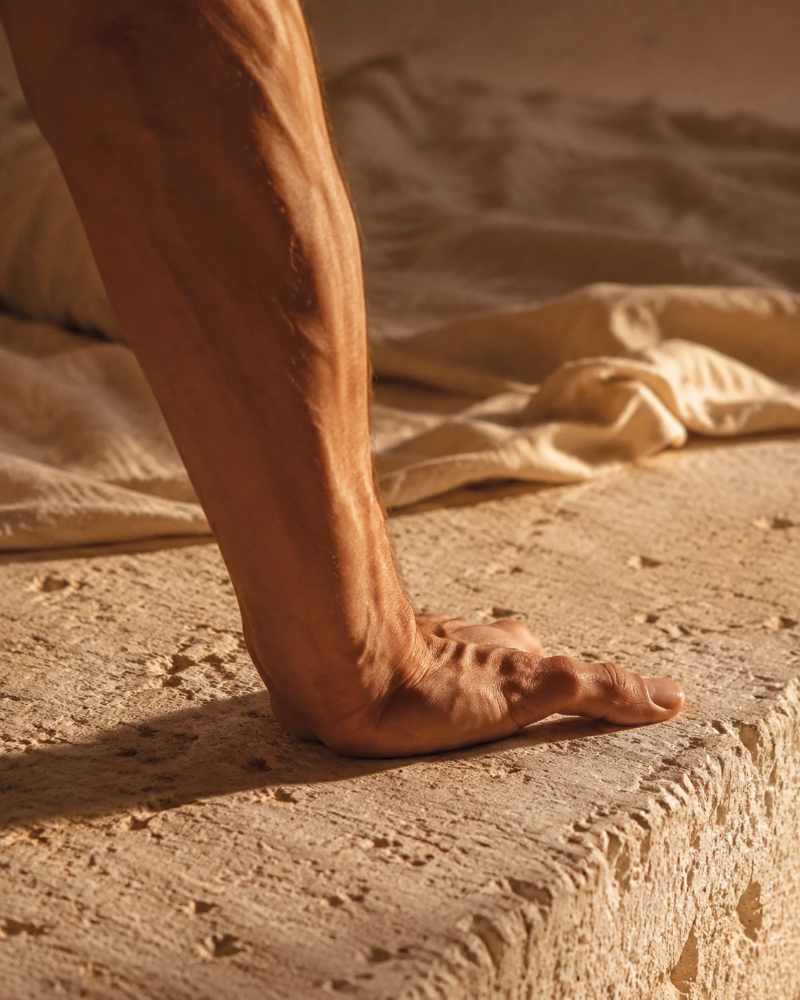
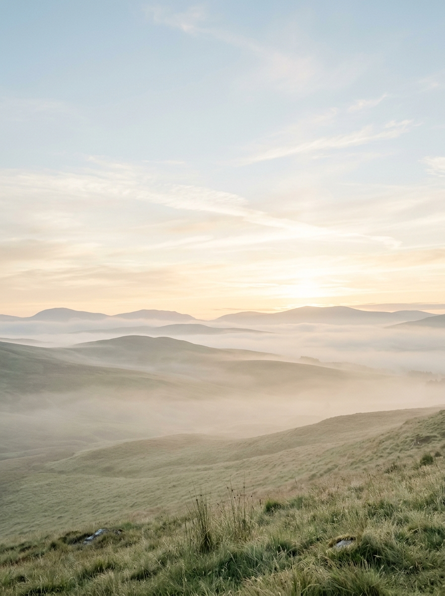
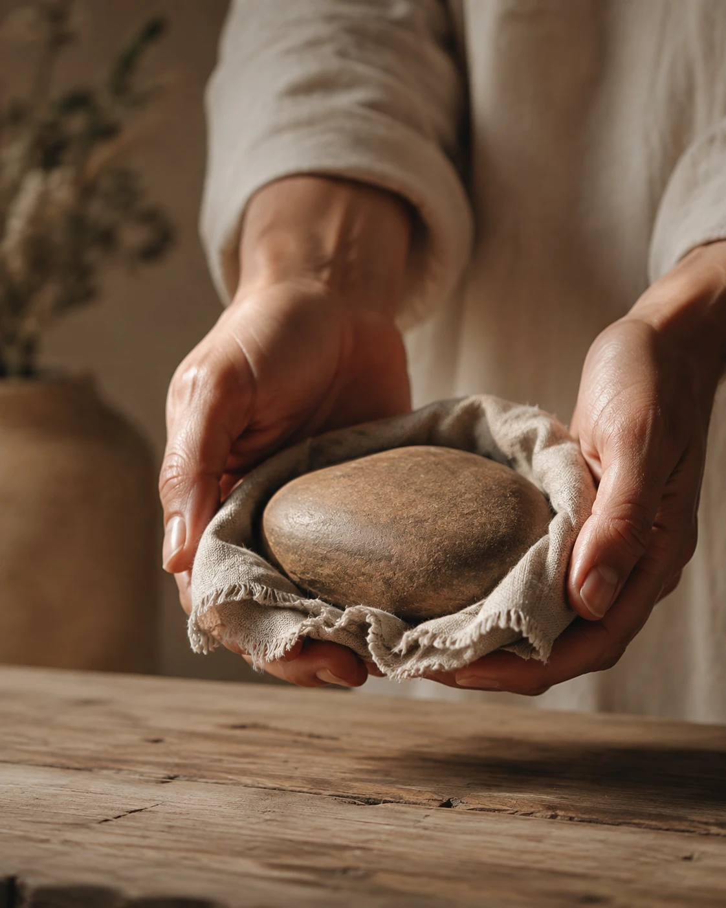
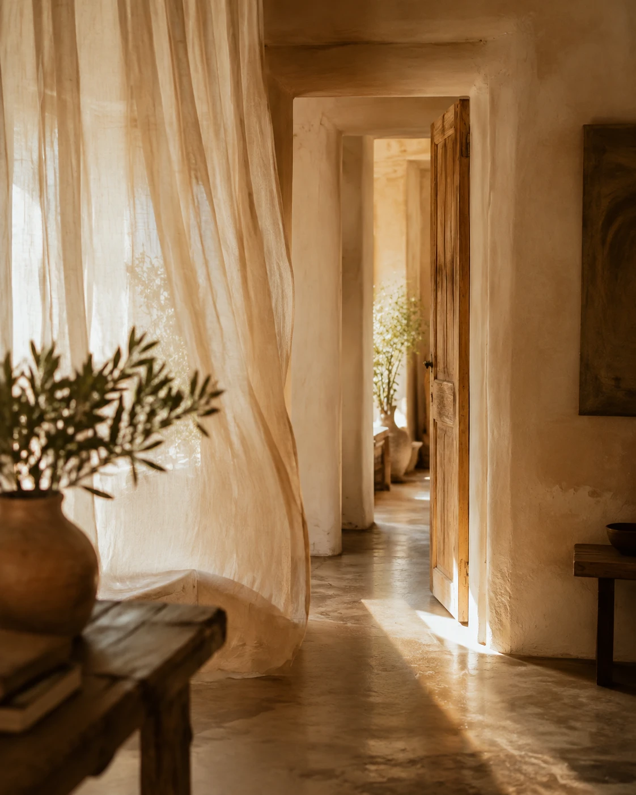
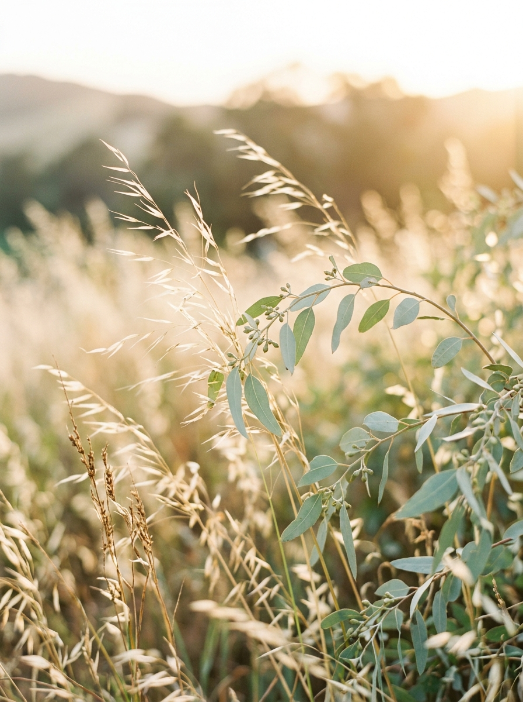
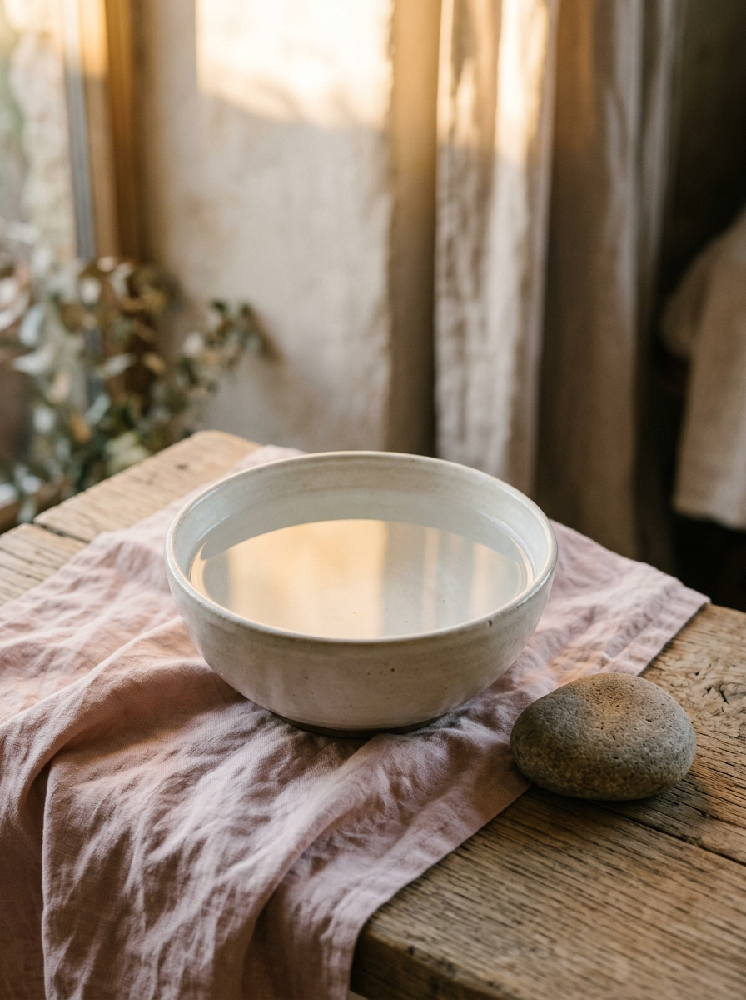
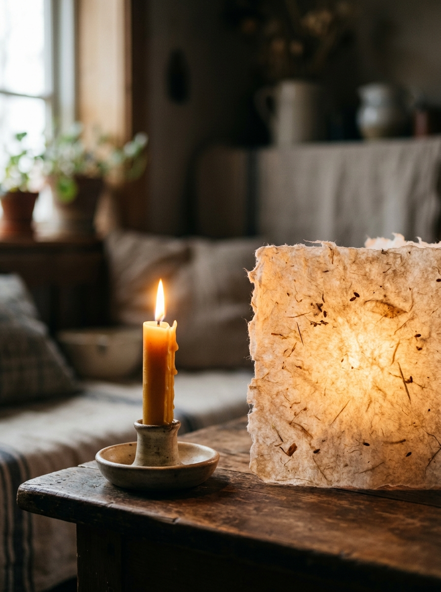
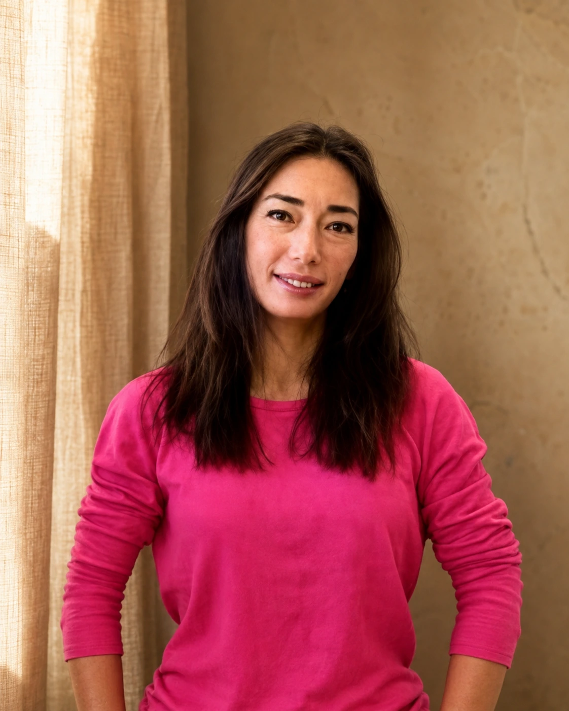

Appui 01 — Un chemin composé avec vous
Le corps
Non comme une forme à réussir, mais comme un lieu vivant de perception et d’appui.


Non comme une forme à réussir, mais comme un lieu vivant de perception et d’appui.
Non comme un rythme à imposer, mais comme une présence qui accompagne et révèle.
Non pour tout comprendre, mais pour rencontrer plus finement ce qui est là.
Une Porte ne vous définit pas. Elle ouvre seulement un premier espace de reconnaissance. Vous pouvez en ouvrir plusieurs, revenir en arrière ou ne rien choisir.





Ils ne sont pas des étapes à franchir. Ils donnent à Nova Yoga sa manière de rencontrer le vivant, la présence, la sensibilité, la liberté et le chemin propre à chacun.

Je ne vous accompagne pas vers une version idéale de vous-même. Je vous propose un espace où le chemin peut commencer depuis ce que vous vivez réellement.
Les pratiques apparaissent depuis la personne, son rythme et le moment traversé. Elles restent des possibilités : jamais une prescription, jamais une identité à adopter.